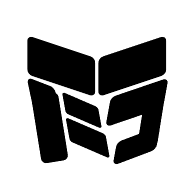
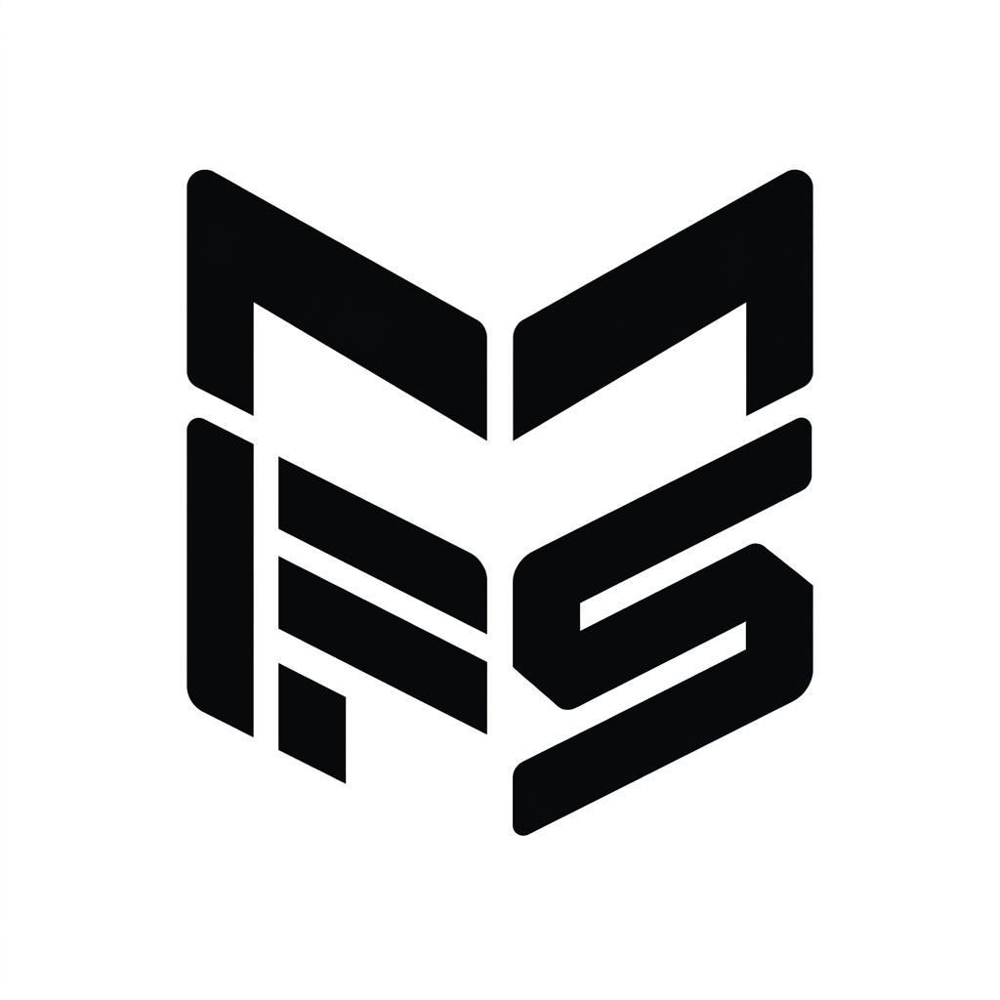
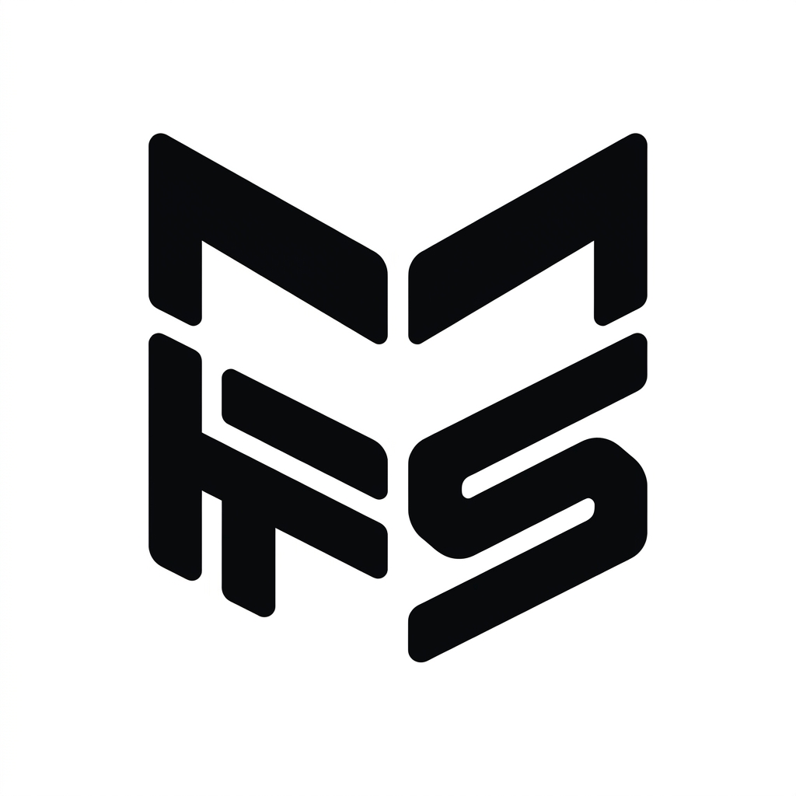
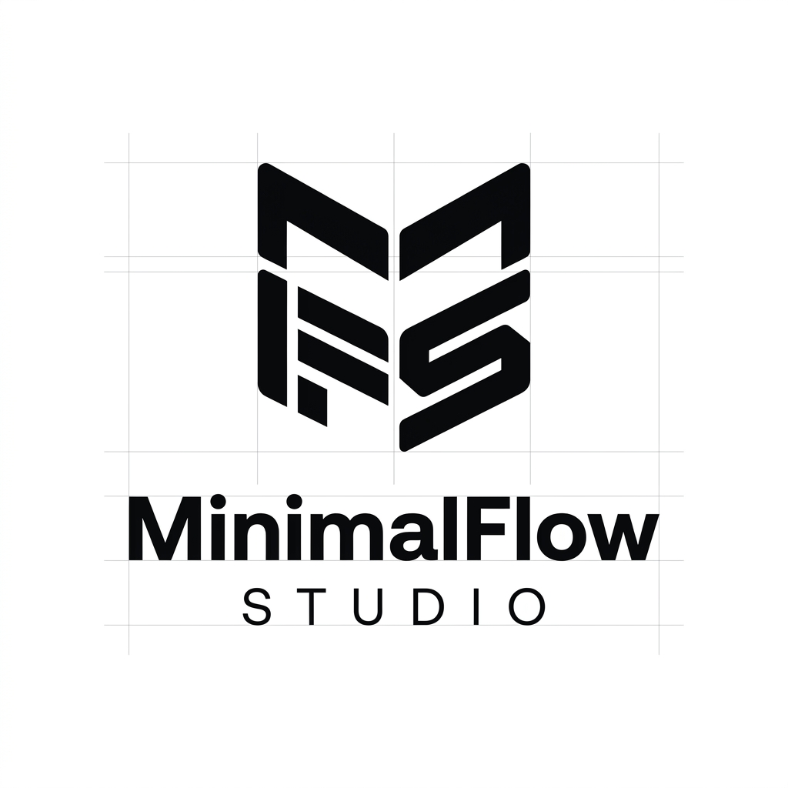
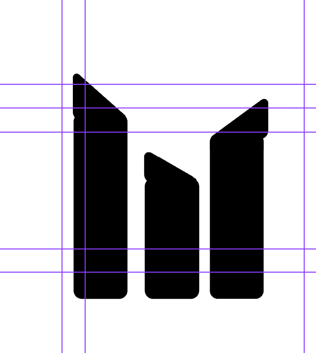
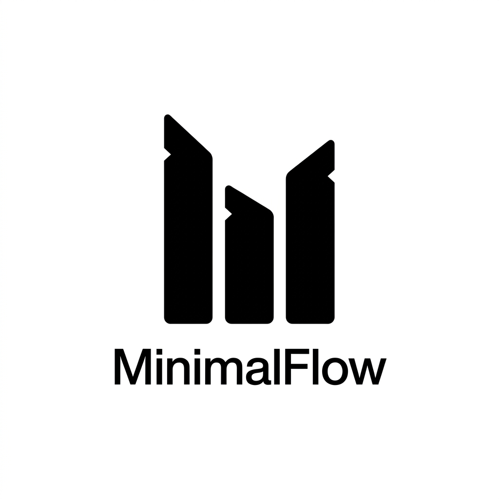
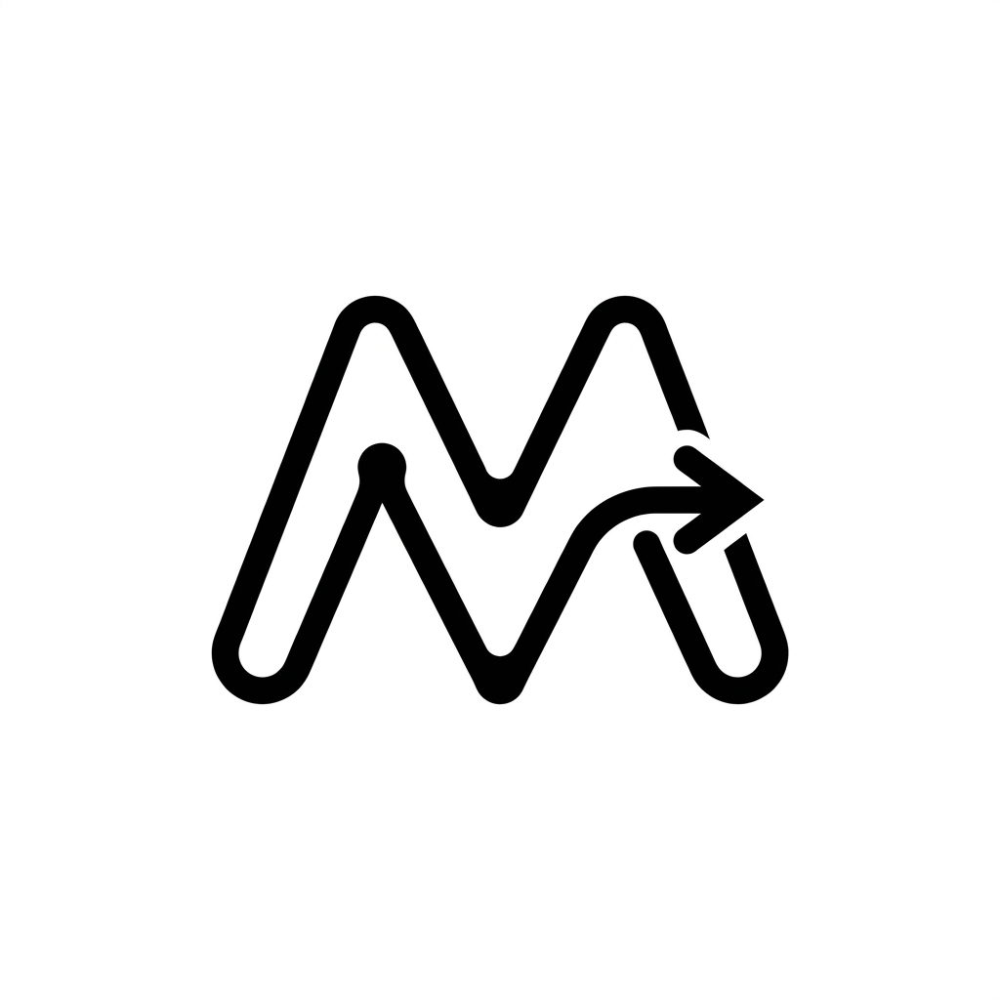
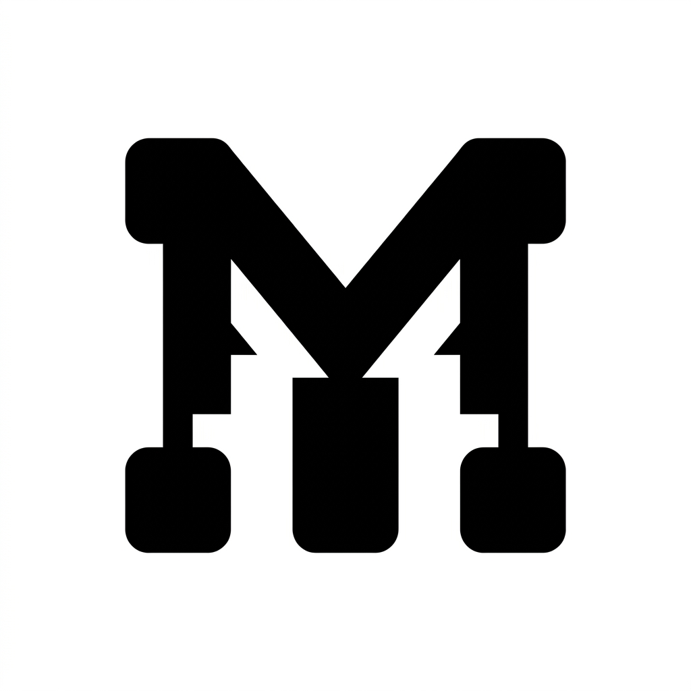
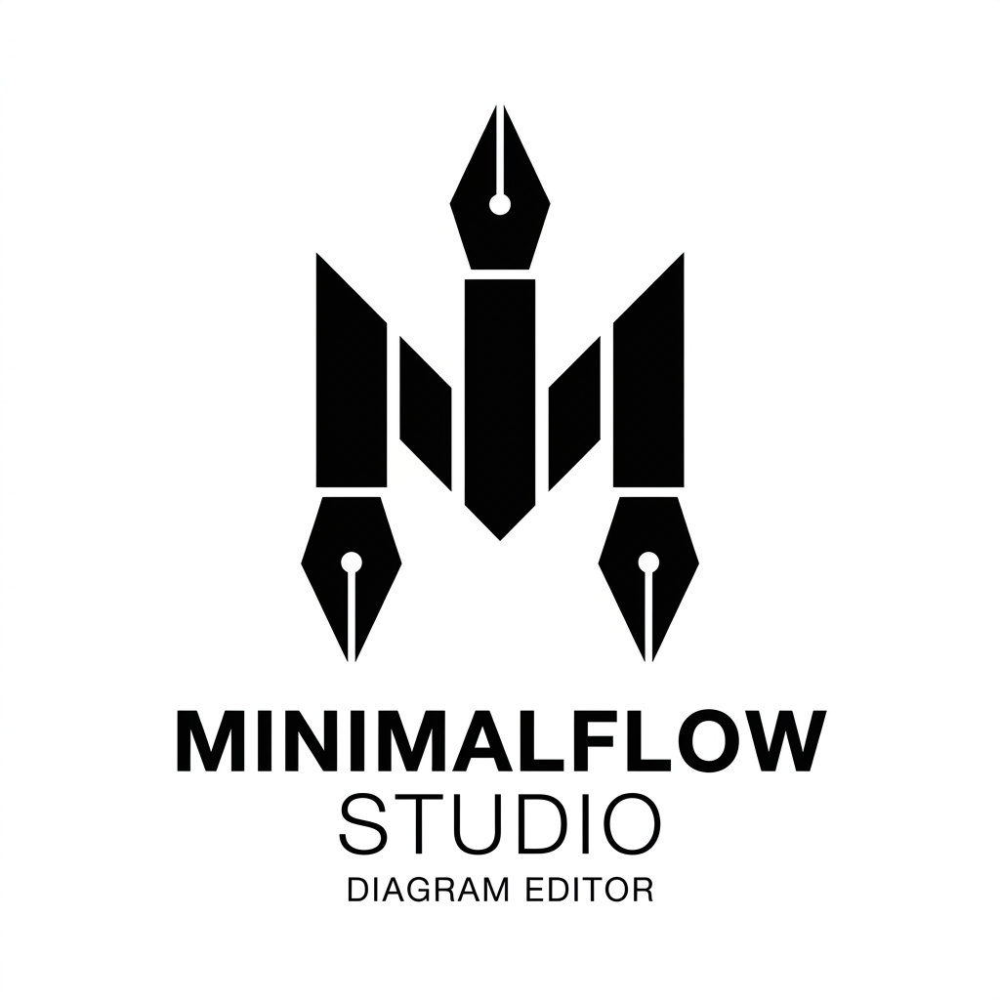

Penyempurnaan geometris dari ide asli 3 pilar yang Anda kirimkan, dipadukan dengan 4 alternatif logo ilustratif profesional bertema monokrom, diagram presisi, dan tipografi Swiss.
Sketsa Baru Anda: Monogram Isometrik 'MFS' (MinimalFlow Studio)
1. SKETSA TANGAN ASLI ANDA (MONOGRAM BLOK 6 ELEMEN)

• Konsep Sangat Cerdas: Menggabungkan 3 huruf sekaligus (M di atas, F di kiri bawah, S di kanan bawah) membentuk perisai / buku terbuka isometrik.
• Isu Teknis Awal: Garis batas antar balok belum rata (*gutters uneven*), sudut kemiringan sayap kiri dan kanan tidak simetris, dan potongan lengkung masih kasar.
2. HASIL PENYEMPURNAAN GEOMETRI VEKTOR KAMI

• Celah Garis (*Negative Space*) 100% Paralel: Seluruh rongga pemisah berjarak konsisten dan simetris.
• Kemiringan Isometrik Sempurna: Sayap kiri dan kanan simetris membentuk huruf M yang kokoh.
• Keterbacaan Huruf Maksimal: Huruf F (kiri) dan S (kanan) terbaca sangat jelas, modern, dan berbobot studio profesional.
3 Variasi Gaya dari Konsep MFS Ini:
Gaya 1: Sharp Isometric
Sudut tegas, presisi militer/teknikal, maskulin dan futuristik.

Gaya 2: Soft Tech Rounded
Radius sudut membulat 4px ala ekosistem Apple / Figma, modern dan ramah.

Gaya 3: Brand Lockup & Grid
Dilengkapi grid konstruksi dan tipografi resmi Swiss Sans MinimalFlow STUDIO.
Konsep Sebelumnya: 3 Pilar Monolith (Ascending Flow)
1. SKETSA ASLI ANDA (DRAF AWAL DENGAN GUIDES)

• Konsep: 3 pilar berundak dengan bevel miring & notch (membentuk huruf M).
• Isu Teknis: Sudut potong kemiringan bevel belum seragam antar pilar, lekukan radius bawah sedikit asimetris, dan notch kiri memiliki kedalaman yang bervariasi.
2. HASIL PENYEMPURNAAN VEKTOR PRESISI (REFINED MATHEMATICAL M)
• Kemiringan 35° Konsisten di ketiga ujung pilar puncaknya.
• Proporsi Rasio Emas: Rasio tinggi pilar kiri, tengah, dan kanan diselaraskan sehingga membentuk siluet progresif alami.
• Radius Sudut Sempurna: Dasar pilar membulat halus (rx 5px), sudut potong notch terstruktur.
4 Pilihan Alternatif Logo Ilustratif (Eksplorasi dari Kami)

Konsep 1 • Refined Original
The Ascending Monoliths
Penyempurnaan penuh dari ide Anda. Tiga pilar berundak dengan bevel presisi dan notch tajam yang membentuk monogram 'M' yang kokoh dan progresif.
Monogram MBold SolidSwiss Grid

Konsep 2 • Flow Dynamic
Continuous Flow Arrow
Satu garis vektor meliuk membentuk huruf 'M' yang terhubung langsung dengan panah flowchart, melambangkan alur diagram yang dinamis tanpa jeda.
MonolineFlow ArrowDynamic

Konsep 3 • Diagram Matrix
Flowchart Node Emblem
Menampilkan blok diagram proses & simpul input-output yang tersusun simetris membentuk huruf 'M' tebal, sangat teknikal dan terkesan studio pro.
EmblemDiagram NodesTechnical

Konsep 4 • Craft & Precision
Technical Drafting Pen 'M'
Menggabungkan 3 mata pena gambar teknik (technical nibs) berpadu menjadi monogram 'M'. Menekankan identitas aplikasi untuk pembuatan diagram presisi tinggi.
Drafting PenArchitecturalArtisan
Simulasi Penerapan pada Navbar MinimalFlow Studio
MinimalFlow Studio
A4 Portrait
100%
Kode SVG Presisi Varian Refined (Siap Dipasang)
<svg xmlns="http://www.w3.org/2000/svg" viewBox="0 0 100 100" fill="none">
<!-- Pilar Kiri (Tinggi Sedang) -->
<path d="M 12,82 A 5,5 0 0,0 17,87 L 27,87 A 5,5 0 0,0 32,82 L 32,32 L 17,21.5 L 17,25 A 2,2 0 0,1 15,27 L 12,27 Z" fill="currentColor"/>
<!-- Pilar Tengah (Tinggi Pendek / Lembah M) -->
<path d="M 40,82 A 5,5 0 0,0 45,87 L 55,87 A 5,5 0 0,0 60,82 L 60,48 L 45,37.5 L 45,41 A 2,2 0 0,1 43,43 L 40,43 Z" fill="currentColor"/>
<!-- Pilar Kanan (Tinggi Puncak / Pertumbuhan) -->
<path d="M 68,82 A 5,5 0 0,0 73,87 L 83,87 A 5,5 0 0,0 88,82 L 88,22 L 73,11.5 L 73,15 A 2,2 0 0,1 71,17 L 68,17 Z" fill="currentColor"/>
</svg>